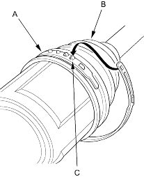
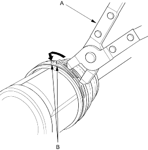
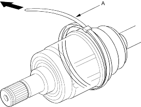
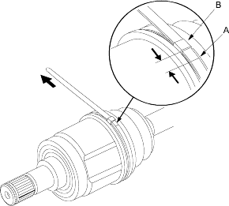

- Install the new low profile band (A) onto the boot (B) and dynamic damper, then hook the tab (C) on the band.

- Close the hook portion of the band with a commercially available boot band pincers (A), then hook the tabs (B) on the band.

- Fit the boot ends onto the driveshaft and the inboard joint, then install the band (A) onto the boot.

- Pull up the slack in the band by hand.
- Mark a position (A) on the band 10 - 14 mm (0.4 – 0.6 in.) from the clip (B).
